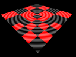

HelloWorld example
This example is a minimal example using only the proland terrain framework (see Terrain framework), without any producer. It simply uses a dynamic quadtree, and draws each terrain quad with an OpenGL quad and a simple shader.
Main class
The main class is defined as follows:
#include <stdlib.h> #include "ork/core/FileLogger.h" #include "ork/render/FrameBuffer.h" #include "ork/resource/XMLResourceLoader.h" #include "ork/scenegraph/SceneManager.h" #include "ork/ui/GlutWindow.h" #include "proland/util/TerrainViewController.h" using namespace ork; using namespace proland; class HelloWorld : public GlutWindow { public: ptr<SceneManager> manager; ptr<TerrainViewController> controller; int mouseX, mouseY; bool rotate;
Here we simply include the headers we need, and declare a subclass of ork::GlutWindow. This class will define what must be drawn at each frame, and how mouse and keyboard events must be handled. For this it uses a ork::SceneManager, i.e., the scene to be rendered, as well as a proland::TerrainViewController to hold the current camera position, and three additional fields to handle mouse events.
HelloWorld() : GlutWindow(Window::Parameters().size(1024, 768))
{
FileLogger::File *out = new FileLogger::File("log.html");
Logger::INFO_LOGGER = new FileLogger("INFO", out, Logger::INFO_LOGGER);
Logger::WARNING_LOGGER = new FileLogger("WARNING", out, Logger::WARNING_LOGGER);
Logger::ERROR_LOGGER = new FileLogger("ERROR", out, Logger::ERROR_LOGGER);
The constructor first sets up some Ork loggers. By default the DEBUG logger is null, and the INFO, WARNING and ERROR logger simply log to the command line. Here we create file loggers around the default loggers, in order to also log events into the "log.html" file.
ptr<XMLResourceLoader> resLoader = new XMLResourceLoader();
resLoader->addPath(".");
resLoader->addArchive("helloworld.xml");
ptr<ResourceManager> resManager = new ResourceManager(resLoader, 8);
manager = new SceneManager();
manager->setResourceManager(resManager);
We then create a resource loader, and configure it to load resources from the current directory and from the "helloworld.xml" archive file. Then we create a resource manager using this loader, and a ork::SceneManager using this resource manager.
manager->setScheduler(resManager->loadResource("defaultScheduler").cast<Scheduler>());
manager->setRoot(resManager->loadResource("scene").cast<SceneNode>());
manager->setCameraNode("camera");
manager->setCameraMethod("draw");
We finally configure the scene manager: we set its task scheduler by loading it with the resource loader, we set its scene graph by loading it with the resource loader, and we finally define which node and method to use for the camera.
controller = new TerrainViewController(manager->getCameraNode(), 2500.0);
}
As a last step in this constructor, we create an object that will hold the current camera position, and which will also set the corresponding transformation matrices in the camera node (given by manager->getCameraNode()). 2500.0 is the initial camera altitude.
virtual ~HelloWorld()
{
}
virtual void redisplay(double t, double dt)
{
controller->update();
controller->setProjection();
ptr<FrameBuffer> fb = FrameBuffer::getDefault();
fb->clear(true, false, true);
manager->update(t, dt);
manager->draw();
GlutWindow::redisplay(t, dt);
if (Logger::ERROR_LOGGER != NULL) {
Logger::ERROR_LOGGER->flush();
}
}
The redisplay method defines how the scene must be rendered at each frame. Its implementation is very simple, as most of the work is done by the scene manager. The first two lines copy the camera position stored in the view controller into the scene node corresponding to the camera. The following lines clear the screen, update the scene graph, and draw it on screen. Finally the overriden redisplay method is called to actually display the new frame (this method internally calls glutSwapBuffer).
virtual void reshape(int x, int y)
{
ptr<FrameBuffer> fb = FrameBuffer::getDefault();
fb->setDepthTest(true, LESS);
fb->setViewport(vec4<GLint>(0, 0, x, y));
GlutWindow::reshape(x, y);
}
The reshape method is called when the window is resized. It simply updates the viewport of the screen framebuffer to match the new window size.
virtual void idle(bool damaged)
{
GlutWindow::idle(damaged);
if (damaged) {
manager->getResourceManager()->updateResources();
}
}
The idle method is called when no other event occured. Its damaged argument indicates whether a part of the window has been uncovered by another window since the last call to this method, or if the window just got the focus. If it is the case, we check if resources have changed on disk, and if so we update them (all this is done by the updateResources method).
virtual bool mouseClick(button b, state s, modifier m, int x, int y)
{
mouseX = x;
mouseY = y;
rotate = (m & CTRL) != 0;
return true;
}
virtual bool mouseMotion(int x, int y)
{
if (rotate) {
controller->phi += (mouseX - x) / 500.0;
controller->theta += (mouseY - y) / 500.0;
} else {
vec3d oldp = manager->getWorldCoordinates(mouseX, mouseY);
vec3d p = manager->getWorldCoordinates(x, y);
if (valid(oldp) && valid(p)) {
controller->move(oldp, p);
}
}
mouseX = x;
mouseY = y;
return true;
}
virtual bool mouseWheel(wheel b, modifier m, int x, int y)
{
if (b == WHEEL_DOWN) {
controller->d *= 1.1;
}
if (b == WHEEL_UP) {
controller->d /= 1.1;
}
return true;
}
The mouseClick, mouseMotion and mouseWheel methods implement a simple user interface to navigate in the terrain. A mouse drag translates the camera, while a mouse drag with CTRL rotates the camera around the point of the terrain which is at the center of the screen. Finally the mouse wheel moves the camera closer or farther away from this "center point". These methods are implemented by modifying the x0 and y0 fields in the view controller (which correspond to the terrain coordinates of the center point), its theta and phi fields (which correspond to the camera orientation around the center point), and its d field (which corresponds to the distance between the camera and the center point).
virtual bool keyTyped(unsigned char c, modifier m, int x, int y)
{
if (c == 27) {
::exit(0);
}
return true;
}
virtual bool specialKey(key k, modifier m, int x, int y)
{
switch (k) {
case KEY_F5:
manager->getResourceManager()->updateResources();
break;
default:
break;
}
return true;
}
The keyTyped and specialKey method handle keyboard events. Here they simply stop the program when ESC (ASCII code 27) is pressed, and update the resources when F5 is pressed.
bool valid(vec3d p) {
return abs(p.x) < 1000.0 && abs(p.y) < 1000.0 && abs(p.z) < 1000.0;
}
static static_ptr<Window> app;
};
static_ptr<Window> HelloWorld::app;
int main(int argc, char* argv[])
{
atexit(Object::exit);
HelloWorld::app = new HelloWorld();
HelloWorld::app->start();
return 0;
}
The rest of the code simply declares a static instance of the HelloWorld window, creates this instance, and starts the event loop. The atexit call ensures that Object::exit is called when the application stops, in order to clean up everything before exiting.
Resources
The above code is fairly generic, and its result mainly depends on how the scene graph is defined. This scene graph is defined in the following "helloworld.xml" archive file:
<?xml version="1.0" ?> <archive> <multithreadScheduler name="defaultScheduler" nthreads="3" fps="0"/>
The first resource defined in this archive is the scheduler. Here it is a multithread scheduler using 3 threads (which is not really necessary here for such a simple example).
<sequence name="cameraMethod">
<foreach var="o" flag="dynamic" parallel="true">
<callMethod name="$o.update"/>
</foreach>
<foreach var="o" flag="object" culling="true">
<callMethod name="$o.draw"/>
</foreach>
</sequence>
The second resource is the camera method, which defines how the whole scene must be rendered. Here this method calls the "update" method on each scene node having the "dynamic" flag, and then calls the "draw" method on each scene node having the "object" flag.
<terrainNode name="myTerrain" size="500" zmin="-1" zmax="1" splitFactor="2" maxLevel="7"/>
The third resource is the terrain. Here we define a terrain of size 500 (i.e. its bounding box will be [-500,500]x[-500,500]), whose altitudes are between -1 and 1, and which will be subdivided with a split factor of 2, up to the quadtree level 7 at most.
<sequence name="updateTerrainMethod">
<updateTerrain name="this.terrain"/>
</sequence>
The fourth resource is the "update" method for the scene node corresponding to the terrain. This method simply calls the proland::UpdateTerrainTask, which subdivides the terrain quadtree based on the current camera position. The terrain is supposed to be defined by the "terrain" field of the scene node on which this method is called.
<sequence name="drawTerrainMethod">
<setProgram>
<module name="this.material"/>
</setProgram>
<drawTerrain name="this.terrain" mesh="this.grid" culling="true"/>
</sequence>
The fifth resource is the "draw" method for the scene node corresponding to the terrain. This method sets the shader whose id in the terrain scene node is "material" and then calls the proland::DrawTerrainTask to draw each visible leaf quad of the terrain, by drawing the mesh whose id in the terrain scene node is "grid" (using the previous shader). As above, the terrain is supposed to be defined by the "terrain" field of the scene node on which this method is called.
<module name="terrainShader" version="330" source="terrainShader.glsl"/>
This resource defines the shader that will be used to draw each terrain quad. It simply specifies the GLSL version of this shader, and the file that contain the shader source code.
<node name="scene">
<node flags="camera">
<method id="draw" value="cameraMethod"/>
</node>
<node name="terrainNode" flags="object,dynamic">
<bounds xmin="-500" xmax="500" ymin="-500" ymax="500" zmin="-1" zmax="1"/>
<field id="terrain" value="myTerrain"/>
<mesh id="grid" value="quad.mesh"/>
<method id="update" value="updateTerrainMethod"/>
<method id="draw" value="drawTerrainMethod"/>
<module id="material" value="terrainShader"/>
</node>
</node>
</archive>
Finally the last resource defines the scene graph, using the previously defined resources (resource can in fact be defined in any order). This scene graph contains only two nodes. The first one is the camera node, which only contains one method, the one to draw the scene (defined above). The second node corresponds to the terrain. It has two flags, "object" and "dynamic" (cf the definition of the camera method). Its bounding box is defined, consistently with the terrain size (see above). The "terrain" field required by the updateTerrainMethod and drawTerrainMethod methods is set to the "myTerrain" terrain, defined above. The "grid" mesh required by the drawTerrainMethod method is set to the mesh defined in the "quad.mesh" file. Similarly, the "material" shader required by the drawTerrainMethod is set to the "terrainShader" module defined above. Finally the "draw" and "update" methods called by the camera method are set to the "drawTerrainMethod" and "updateTerrainMethod" defined above.
In order to complete the scene graph description, we simply need to provide the "quad.mesh" and "terrainShader.glsl" files. The first one is very simple:
0 1 0 1 0 0 trianglestrip 1 0 3 float false 4 0 0 0 1 0 0 0 1 0 1 1 0 0
It specifies a mesh whose bounding box is [0,1]x[0,1]x[0,0], made of triangle strips, whose vertices have a single attribute, made of 3 unnormalized floats. The 4 vertices are then specified, and the last 0 indicates that this mesh is not indexed. In fact it is a simple quad made of two triangles.
The terrain shader is also quite simple:
uniform struct { vec4 offset; vec4 camera; vec2 blending; mat4 localToScreen; } deformation; #ifdef _VERTEX_ layout(location=0) in vec3 vertex; out vec4 p; void main() { p = vec4(vertex.xy * deformation.offset.z + deformation.offset.xy, 0.0, 1.0); gl_Position = deformation.localToScreen * p; } #endif #ifdef _FRAGMENT_ in vec4 p; layout(location=0) out vec4 data; void main() { data = vec4(vec3(0.2 + 0.2 * sin(0.1 * length(p.xy))), 1.0); data.r += mod(dot(floor(deformation.offset.xy / deformation.offset.z + 0.5), vec2(1.0)), 2.0); } #endif
The deformation uniforms are set by the proland::DrawTerrainTask before drawing each terrain quad. Here we only need the "offset" and "localToScreen" values. The "offset" value indicates how the [0,1]x[0,1] vertex coordinates must be transformed to get the terrain physical coordinates for this quad. The "localToScreen" matrix transforms these physical coordinates to screen coordinates. Both uniforms are used in the vertex shader to compute gl_Position. The fragment shader is a simple "procedural shader" based on the physical coordinates p output by the vertex shader. The last line produces a "checkerboard pattern" to easily see the terrain quads, i.e, to show how the terrain quadtree is subdivided when the camera moves.